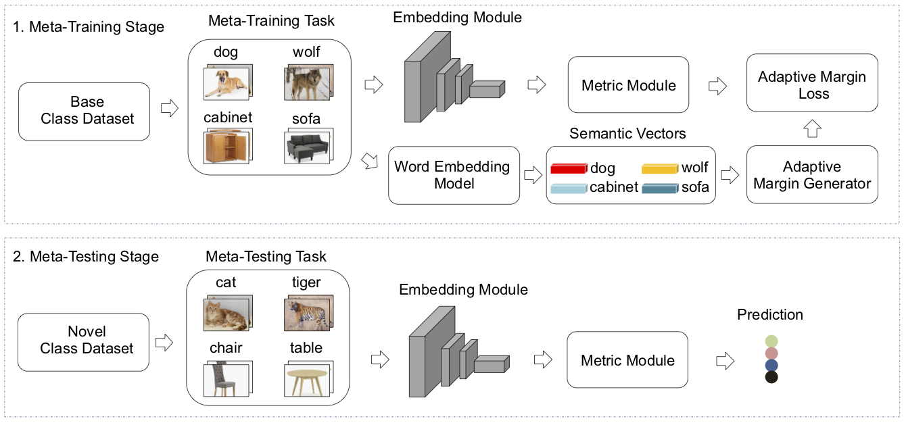

Published in CVPR, 2020
Few-shot learning (FSL) has attracted increasing attention in recent years but remains challenging, due to the intrinsic difficulty in learning to generalize from a few examples. This paper proposes an adaptive margin principle to improve the generalization ability of metric-based meta-learning approaches for few-shot learning problems. Specifically, we first develop a class-relevant additive margin loss, where semantic similarity between each pair of classes is considered to separate samples in the feature embedding space from similar classes. Further, we incorporate the semantic context among all classes in a sampled training task and develop a task-relevant additive margin loss to better distinguish samples from different classes. Our adaptive margin method can be easily extended to a more realistic generalized FSL setting. Extensive experiments demonstrate that the proposed method can boost the performance of current metric-based meta-learning approaches, under both the standard FSL and generalized FSL settings. 
[paper] [full version] [slides] [medium] [知乎] [google scholar]